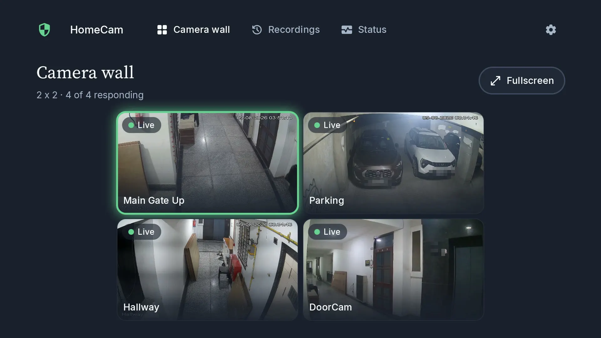
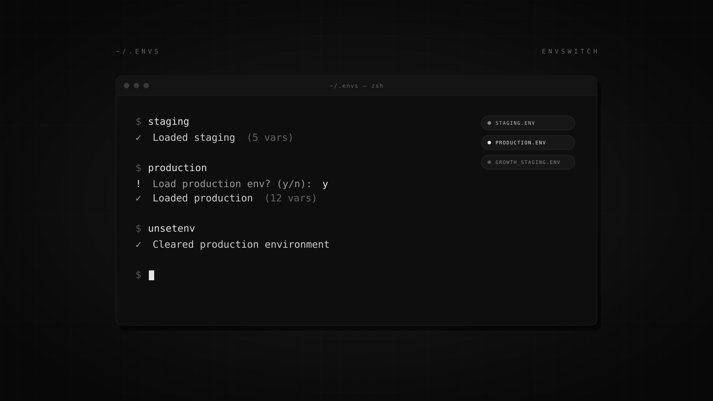

HIRNAYMAY BHASKAR
I own the messaging, billing and event infrastructure at a YC + Sequoia-backed commerce platform. Mostly: finding why something at scale is slow, wrong, or losing money — and fixing the cause rather than the symptom.
Four systems, four measurements — each one with the mechanism attached
Worst-case Pub/Sub delivery delay, after rebuilding consumer flow control and backpressure. 38 nodes retired.
Read the writeup →Campaign analytics page load, while doubling page size — rebuilt on a Postgres-first layer with age-tiered caching.
Of email billing revenue recovered — lost to a 3-hour daily cutoff nothing in the system displayed.
Read the writeup →RCS messages carried on the shared broadcast orchestration, for 50+ enterprise clients.
One delivery path, not four
Every broadcast channel had grown its own scheduling, retry and status-tracking code. Four implementations of the same three problems, each with its own bugs. Consolidating them onto shared AWS Step Functions orchestration meant a new channel became an adapter rather than a pipeline — which is how RCS shipped.
BIK.AI · YC + Sequoia
Software Engineer II · Apr 2026 – Present
Software Engineer · Dec 2024 – Mar 2026
Bengaluru, India
- ▪ Root-caused a Pub/Sub backlog across two queues the team had been absorbing with a 38-node scale-out that often never scaled back down, then rebuilt consumer flow control, ack-deadline handling and backpressure. Combined backlog fell 1.26M messages to under 4K, worst-case delivery delay 2.4 hours to 94 seconds, and the scale-out came off. Writeup →
- ▪ Own billing across every revenue channel. Redesigned AI billing after finding stores drawing 2–10x their contracted allocation: a central versioned rate card keyed on tier, country and usage type, with credits denominated in money rather than operation counts. Separately recovered 12.5% of email billing revenue lost to a 3-hour daily cutoff, and fixed a WhatsApp credit runner hardcoding 18:30 UTC as midnight across five call sites. Writeup →
- ▪ Stopped recurring sync failures across 250+ Shopify stores with a resumable orchestrator/executor state machine. Run-scoped checkpointing, idempotent retries, paced execution under GraphQL rate limits. Reprocessed 2M+ records with zero duplicates, flag-gated behind a legacy fallback.
- ▪ Cut campaign analytics page load from 20s to 200ms while doubling page size, rebuilding it on a Postgres-first data layer with on-demand Elasticsearch refresh and age-tiered caching.
- ▪ Consolidated WhatsApp, email, RCS and SMS broadcasts onto shared AWS Step Function orchestration, replacing a separate delivery path per channel with one provider-agnostic path. Launched RCS on it for 50+ enterprise clients, now carrying 2.5M messages/month.
- ▪ Built the external webhook system forwarding platform events to merchant endpoints, then isolated delivery per store on Cloud Tasks after tracing duplicate deliveries to ack-deadline overruns, with a 30s attempt timeout, three bounded retries, and a 24-hour health evaluator that auto-blocks endpoints past a 50% failure rate.
- ▪ Designed and built the multi-channel alerting platform that replaced email-only merchant notifications, now the path the other three engineering pods ship every alert type on. Role-based routing, per-instance delivery tracking, rate limiting, admin console.
- ▪ Carry on-call for the systems above. Drove SOC 2 Type 2 and ISO 27001 to certification with the CTO; company-wide AWS/GCP administrator with org-level IAM ownership.
- ▪ Shipped multi-file metadata editing in C++/Qt into a codebase maintained by 50+ developers across 15+ countries: extensible metadata-provider interface with cross-file command-pattern undo/redo, cutting 75% of the steps in multi-file tagging. Mentored by VideoLAN founder Jean-Baptiste Kempf. GSoC archive →
- ▪ Built MuseScore 4.6's inline popup framework in C++/QML on Qt's model-view architecture. Later GSoC cohorts extended the same infrastructure. Still contributing — 10 merged PRs across the inspector, UI framework and platform layers. GSoC archive →
Things I built outside work
Both of these exist because I wanted them to exist. Both are open source and both are used — one by me every day, one by my team.

HomeCam TV
A Dahua NVR on the television, driven entirely by the remote. The interesting constraint is the d-pad, not the video: every screen names the control it opens on, so focus never lands nowhere.

envswitch
Shell environments by name, auto-loaded by directory and git branch. Production is never auto-loaded — the whole safety model is that implicit actions only reach environments where being wrong is cheap.
Earlier repositories
Quack — YouTube comment search over an inverted index, as a Chrome extension. · google-trends-api-toolkit — Python wrapper over Google Trends' undocumented endpoints, reverse-engineered from network traffic. · Coloc — roommate matching on Gale-Shapley with Elo ratings; the approach was published in IJFMR.
Engineering notes
Write-ups of things I actually had to fix — delivery backlogs, retry semantics, billing correctness. Mostly the reasoning that didn't fit in a commit message.
What 38 nodes were hiding
A queue that grows while you add consumers is not telling you about capacity. It is telling you that some of your capacity is being spent twice.
How to bill AI usage
Metering AI is easy. Billing it correctly is a unit problem, a clock problem and a visibility problem — a working design, and the failure modes that shaped it.
18:30 UTC is not midnight
A constant that was right once, in one place, for one market — then copied to five call sites. Constants are concepts that never got named.
Two Google Summer of Code cycles
Selected in 2023 and 2024, both in C++/Qt, both in codebases with users in the hundreds of millions. Still contributing to MuseScore.
What I build with
- Languages
- TypeScript · JavaScript · Python · SQL · C++/Qt
- Data
- PostgreSQL · Elasticsearch · Redis · Firestore
- Backend
- Node.js · Express · REST · GraphQL · microservices · event-driven architecture · distributed systems · message queues
- Cloud
- GCP (Pub/Sub, Cloud Tasks, Cloud Functions, GKE) · AWS (Step Functions, Lambda, IAM) · Docker · CI/CD
- Also
- React · Redux — internal billing and configuration dashboards fronting the systems above.
About
I'm a backend engineer in Bengaluru. I own the messaging, billing and event infrastructure at BIK.AI, a commerce platform for Shopify merchants, on a team of about 25 engineers.
Most of what I do is diagnosis. Something is slow, or wrong, or quietly costing money, and the interesting part is almost never the fix — it's working out which of the five plausible explanations is the real one. The systems I've enjoyed most were the ones where the obvious answer was wrong: a queue that grew faster the more consumers we added, a billing figure that governed every invoice and appeared on no screen, a timezone constant that was correct in exactly one country.
The through-line, if there is one: most "scale problems" are correctness problems in a costume. Idempotency, backpressure and blast-radius isolation have resolved more incidents for me than adding capacity ever has — partly because adding capacity often is the incident.
Before this I did two Google Summer of Code cycles in C++/Qt, at VideoLAN and MuseScore, which is where I learned to work in a codebase far older and larger than my understanding of it. I still send patches to MuseScore.
Away from a terminal I shoot film and digital, mostly street and mostly badly.
Bengaluru, India · open to hybrid and remote.
Get in touch
Happy to talk about queues, billing correctness, or anything that broke in an interesting way.
hirnaymay@gmail.com